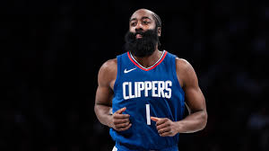
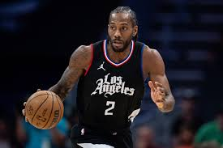
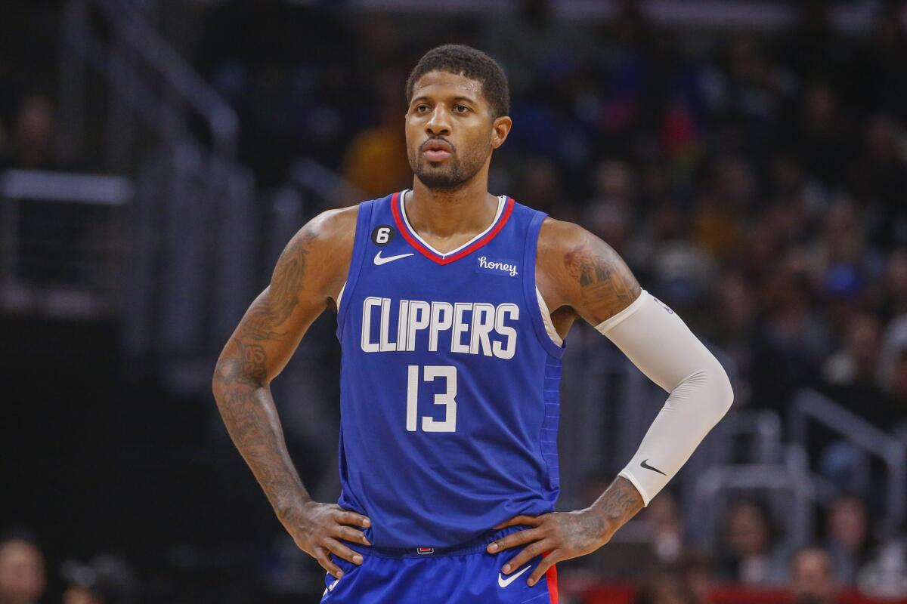

The Los Angeles Clippers, renowned for their exciting basketball games, have become a staple of entertainment in the sports world. Originally founded as the Buffalo Braves in 1970, the team became the San Diego Clippers in 1978 before moving to Los Angeles in 1984. Known for their dynamic gameplay and dedicated fan base, the Clippers have been revitalized in recent years with high-profile player acquisitions and improvements in team performance.

One of the most exciting developments for the Clippers has been the acquisition of James Harden, a player known for his scoring ability and leadership on the court. Alongside Harden, the team features a roster of talented players such as Paul George and Kawhi Leonard, making them strong contenders in the NBA.
The Clippers are committed to building a championship-caliber team and have made significant investments in their roster and coaching staff. With a state-of-the-art practice facility and a passionate fan base, the Clippers are poised for success in the upcoming seasons.
Are you a Los Angeles Clippers fan? Catch their upcoming games and support your team! Click here for tickets.
 